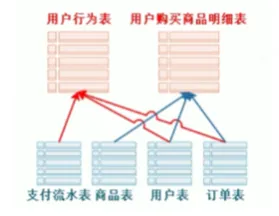
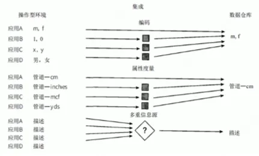
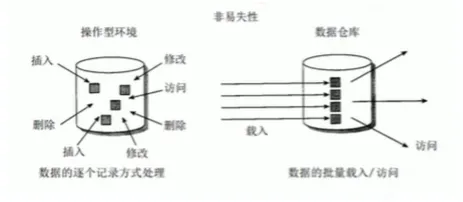
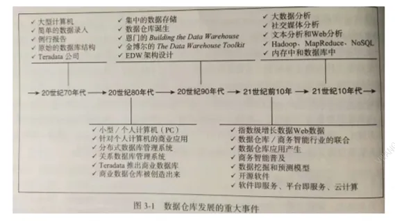
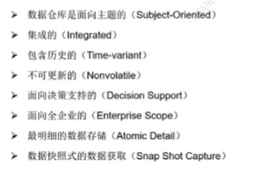

3.3. 数仓概述
1. 为什么要构建数据仓库？
1.1、历史问题
- 历史数据积存：历史数据使用频率低，堆积在业务库中，导致性能下降。
- 数据使用困难：各个部门自己建立独立的抽取系统，导致数据不一致，且使用效率低。
-
业务系统常见问题：
- 业务系统的表结构为事务处理性能而优化，有时并不适合查询与分析。
- 某些业务数据由于安全或其他因素不能直接访问；
- 业务系统多，数据格式多元化（如日期、数字格式不统一）；
- 业务系统的列名通常是硬编码，有时仅仅是无意义的字符串，这让编写分析系统更加困难；
- 没有适当的方式将有价值的数据合并进特定应用的数据库。
- 没有适当的位置存储元数据。
- 通常事务处理的优先级比分析系统高，所以如果将分析系统和事务处理运行在同一硬件之上，分析系统往往性能很差。
- 有误用业务数据的风险。
- 用户需要看到的显示数据字段，有时在数据库中并不存在。
-
业务系统版本问题：
- 业务系统的版本变更很频繁，每次变更都需要重写分析系统并重新测试；
- 数据来源于多个业务系统版本的报表，很难建立和维护；
1.2、业务驱动因素
- 决策支持： 公司业务对于数据的实时性越来越迫切，需要有实时数据来辅助完成决策。
- 合规需求： 随着数据监管法规（如 GDPR、CCPA、《数据安全法》）的加强，企业必须确保数据的准确性，可审计性，时效性等。
- 商务智能： 商务智能为组织、客户及产品提供洞察。是建设数仓的主要原因。通过 商务智能获得决策知识，能提升公司运营效率，增强其竞争优势。数据使用速度加快，商务智能从回顾性评价发展到预测分析领域。
1.3、技术进步
- 数据平台工具对整体实时开发的支持也日渐趋于成熟，开发成本降低。
- 尽管需要增加软硬件的投入，但建立独立数据仓库与直接访问业务数据相比，无论是成本还是带来的好处，这样做都是值得的。
2. 什么是数据仓库？
2.1、定义
- 简单来说，数据仓库就是一个 支持决策的数据池，同时还是管理者可能感兴趣的企业 当前和历史数据的存储库。通常数据被组织成分析处理可用的形式（例如在线分析处理、数据挖掘、查询、报表和其他支持决策的应用）。
- 数据仓库，是一个用来 支持管理者决策（Decision Making Support）、面向主题的（Subject Oriented）、集成的（Integrate）、非易失/稳定的（Non-Volatile）、随时间变/化反映历史变化的（Time Variant）数据集合。主要用于组织积累的历史数据，并使用分析方法（OLAP、数据分析）进行整理，进而辅助决策，为管理者、企业系统提供数据支持，构建商务智能（BI）和决策支持系统（decision support system/DDS）。
2.2、特点
1️⃣ 面向主题的
传统数据库中，最大的特点是面向应用进行数据的组织，各个业务系统可能是相互分离的。
数仓为数据分析提供服务，根据主题组织将原始数据集合在一起。面向主题（销售、客户、财务、人员、生产），用户可以确定业务如何开展，以及为什么要这样开展。面向主题它提供了一个对企业进行更加全面分析的视觉。

2️⃣ 集成的
集成与面向主题密切相关。原始数据来源于不同数据源（分散、独立、异构的数据库），要整合成最终数据，需要经过抽取、清洗、转换的过程，最终将不同数据源的数据以一致（命名冲突、计量单位差异等）的格式存储 。

3️⃣ 非易失
数据仓库 保存的数据是一系列历史快照，不允许被修改，只允许通过工具进行查询、分析。过时的数据将会被抛弃，而更新的数据则作为新数据被记录下来。

4️⃣ 时变性
数仓会 定期接受、集成新的数据，从而反应出数据的最新变化。（每天同步一次）每个数仓都具有时间属性，时间是所有数据仓库都支持的一个重要维度。在数据仓库中，用于分析的多元数据包括不同的时间点（如日、周和月等）。
上述这些特点是数据仓库非常便于数据访问。此外，数据仓库还有一些其他特点:
5️⃣ 基于网络：数据仓库通常被用来为基于网络的应用提供高效的计算环境。
6️⃣ 关系的/多维的：数据仓库常常是基于关系结构或多维结构。（参考 Romero 和 Abello 的文章）。
7️⃣ 客户端/服务器：数据仓库运用客户端/服务器架构为终端用户提供更轻松便捷的访问。
8️⃣ 实时的：新型的数据仓库已经具备提供实时或动态的数据访问和分析能力。
9️⃣ 元数据：数据仓库通过元数据（即关于数据的数据）来描述数据的组成方式，以及如何有效的使用数据。
2.3、作用
-
以统一的形式存储数据，并以一种易于理解的形式提供给使用者，可以一览公司业务的实时状态，并快速识别问题，这是解决问题的首要步骤，也是最重要的一步。
-
科学的数仓能够持续高效的为业务分析服务，可以帮助企业，改进业务流程、提升运营效率、提高产品质量等。
-
为企业制定决策，提供数据支持，检测趋势、偏差和长期关系以便进行预测与比较，从而支持业务决策。
- 综合应用 实时数据仓库（real-time data warehouse/RDW），决策支持系统（Decision support system/DDS）和 商务智能（BI） 技术是实施业务的一种重要手段。
2.4、目标
参考：《DAMA 数据管理知识体系指南》原书第2版
-
支持决策分析：核心目标是提供一致、集成的历史数据，支撑企业级分析。
-
消除信息孤岛
-
提升数据质量
-
分离 OLTP 与 OLAP
-
支撑数据资产化
-
满足合规要求
2.5、历史

- 萌芽阶段（1978-1988年）将业务处理系统和分析系统分开。
- 探索阶段（1988年左右）DEC公司提出TA2规范，定义分析系统的四个部分：数据获取、数据访问、目录和用户服务。
- 雏形阶段（1988年左右）IBM，信息仓库，数据抽取、转换、有效性验证、加载、Cube 开发、图像化查询工具。
- 确立阶段（1991年）比尔-恩门，《Building the Data Warehouse》，数据仓库之父

- 确立阶段（1994年）拉尔夫-金博尔《The DataWarehouse Toolkit》，维度建模。
-
争吵与混乱（1996-1997年）比尔-恩门 & 拉尔夫-金博尔
-
合并阶段（1998-2001年）比尔-恩门提出 CIF 架构：数仓分层，不同层采取不同的建模方式。
2.6、内容
- 数据仓库不仅仅是 SQL脚本、编程语言或ETL工具的使用
-
核心在于：
- 业务理解（业务流程、指标口径、分析需求）
- 数据建模能力（维度建模、星型/雪花模型、数据分层）
- 架构设计（ODS → DWD → DWS → ADS 分层设计）
- 数据仓应用库三大核心内容：
模块 关键内容 示例 数据存储与管理 - 数据分层（ODS/DWD/DWS/ADS）
- 维度建模（事实表、维度表）
- 数据质量监控Hive、HDFS、Iceberg、ClickHouse 数据采集与计算（ETL） - 数据抽取（Extract）
- 数据清洗转换（Transform）
- 数据加载（Load）
- 实时/离线调度Flink、Kafka、Airflow、DataX 数据应用（BI/分析） - 报表开发
- 即席查询（Ad-hoc）
- 数据挖掘（预测模型）
- 数据服务APITableau、Superset、机器学习平台
3. 数据仓库 vs 数据库
| 对比维度 | 数据仓库 (Data Warehouse) | 数据库 (Database) |
|---|---|---|
| 设计目的 | 面向事务 属于 OLTP（在线事务处理）系统 |
面向主题/分析 属于 OLAP（在线分析处理）系统 |
| 典型应用 | 面向高层管理人员的，为其提供决策支持； 长期信息需求、为分析数据\数据挖掘而设计； 报表系统、多维分析、决策支持系统… |
面相业务处理人员日常操作，为捕获数据设计； 为业务处理人员提供信息处理的支持； 管理系统、交易系统、在线应用… |
| 数据特性 | 集成、历史 只读 延迟（ETL处理后可用） 数据是静态的历史数据，只能定期添加、刷新 |
当前 可更新 实时 数据是动态变化的，只要有业务发生，数据就会被更新 |
| 数据规模 | TB~PB级 | GB~TB级 |
| 数据结构 | 星型/雪花模型（维度建模） | 关系模型（3NF规范化） |
| 典型操作 | 复杂查询、全表扫描 | 增删改查、索引查询 |
| 响应时间 | 秒~分钟级 | 毫秒~秒级 |
| 用户类型 | 数据分析师、决策者 | 业务操作人员、开发人员 |
| 更新频率 | 定时批量加载（T+1/小时级） | 实时更新 |
| 典型技术 | Hive/Redshift/Snowflake | MySQL/Oracle/SQL Server |
| 存储成本 | 高（保留多年历史数据） | 中（主要存储当前数据） |
| 查询复杂度 | 多表关联、聚合运算 | 简单条件查询 |
4. OLTP vs OLTP
| 对比维度 | OLAP (联机分析处理) | OLTP (联机事务处理) |
|---|---|---|
| 设计目的 | 支持复杂分析决策 | 支持日常业务操作 |
| 数据特性 | 集成、历史、只读 | 当前、可更新 |
| 典型操作 | 复杂查询、多表关联、聚合计算 | 简单的增删改查操作 |
| 响应时间要求 | 秒级到分钟级 | 毫秒级 |
| 数据模型 | 星型/雪花模型 | 关系模型(3NF) |
| 数据规模 | TB到PB级 | GB到TB级 |
| 用户类型 | 数据分析师、决策者 | 业务操作人员、前端应用 |
| 查询模式 | 不固定、ad-hoc查询 | 固定模式、预定义查询 |
| 数据更新方式 | 批量加载(ETL) | 实时单条记录更新 |
| 索引使用 | 位图索引、列存储 | B树索引、哈希索引 |
| 典型技术 | Snowflake、Redshift、ClickHouse、Doris | MySQL、PostgreSQL、Oracle |
| 并发量 | 低到中(10-100) | 高(1000+) |
| 事务特性 | 不需要ACID | 严格遵循ACID |
| 典型场景 | 月度销售分析、客户行为分析 | 订单处理、账户余额查询 |
关键差异图解
graph LR
OLTP[OLTP系统] -->|ETL处理| OLAP[OLAP系统]
OLAP --> BI[BI工具]
style OLTP fill:#f9f,stroke:#333
style OLAP fill:#bbf,stroke:#3334.1、OLTP 联机事物处理
OLTP（On-Line Transaction Processing）是面向 高并发事务处理的数据库系统，主要特征包括：
graph TD
A[OLTP] --> B[高并发]
A --> C[短事务]
A --> D[实时响应]
A --> E[ACID保证]主流 OLTP 数据库
| 类型 | 代表产品 | 适用场景 |
|---|---|---|
| 关系型 | MySQL, PostgreSQL, Oracle | 通用业务系统 |
| 分布式 | CockroachDB, TiDB | 高扩展需求 |
| 内存数据库 | Redis, MemSQL | 极致性能场景 |
OLTP 联机事物处理存在许多不便，具体如下：
-
数据过于分散。存放在多个数据库，甚至是异构数据。
-
标准规则及编码不统一。不同业务系统间不统一，甚至单个业务系统不同时间段间也可能不统一。
-
数据质量问题。会有部分垃圾数据、测试数据、系统 bug 等产生的错误数据，都会影响到数据质量。
-
历史数据缺失。通常只会保留最近半年到一年左右数据，历史数据会被转移甚至删除。
-
对业务系统性能的影响。过量的分析计算会抢占计算资源。
-
面向 OLTP 的数据存储，有时候并不适合数据分析。
4.2、OLAP 联机分析处理
OLAP（On-Line Analysis Processing）联机分析处理：联机分析处理的概念最早由关系数据库之父 E．F．Codd 于 1993 年提出。Codd 提出了 多维数据库 和 多维分析的概念，把业务系统面向业务逻辑、面向事务增删改查而设计的存储结构，转换成面向分析、侧重查询的多维分析型存储结构。
1️⃣ 维度,属性,度量
多维分析将所有对象都抽象为维度、度量、属性三类：
| 要素类型 | 定义 | 业务意义 | 技术特征 |
|---|---|---|---|
| 维度 | 分析视角/观察角度 | 确定"按什么分析" | 通常作为GROUP BY字段 |
| 属性 | 维度的描述性特征 | 定义"这个视角的具体分类" | 维度表的列 |
| 度量 | 可计算的数值指标 | 回答"分析结果是多少" | 聚合函数(SUM/AVG等)操作对象 |
零售行业维度分析\建模示例如下：
erDiagram
DIM_DATE ||--o{ FACT_SALES : "时间维度"
DIM_PRODUCT ||--o{ FACT_SALES : "商品维度"
DIM_STORE ||--o{ FACT_SALES : "门店维度"
DIM_PRODUCT {
string product_id PK
string product_name
string category
decimal price
}
FACT_SALES {
string transaction_id PK
date sale_date FK
string product_id FK
string store_id FK
int quantity
decimal amount
}2️⃣ R\M\HOLAP
OLAP 可细分为 ROLAP ， MOLAP ， HOLAP 三类
| 对比维度 | ROLAP | MOLAP | HOLAP |
|---|---|---|---|
| 全称 | Relational OLAP | Multidimensional OLAP | Hybrid OLAP |
| 定义 | 基于关系型数据库实现的OLAP | 通过预计算多维数据立方体(Cube)实现的OLAP | 混合ROLAP和MOLAP的实现方式 |
| 存储结构 | 关系型数据库(星型/雪花模型) | 专有多维数组(Cube) | 混合存储(关系型+Cube) |
| 数据粒度 | 存储原始明细数据 | 只存储预聚合数据 | 热数据Cube+冷数据关系存储 |
| 查询性能 | 中等(依赖SQL优化) | 极快(毫秒级响应) | 热数据快/冷数据中等 |
| 存储效率 | 高(关系型压缩) | 低(存在维度爆炸) | 中(智能分层存储) |
| 维度灵活性 | 高(支持动态增加维度) | 低(需预定义维度) | 热数据固定/冷数据灵活 |
| 更新延迟 | 近实时(分钟级) | 批量更新(小时/天级) | 热数据延迟/冷数据实时 |
| 明细查询支持 | ✔️ 完整支持 | ❌ 不支持 | ✔️ 仅冷数据支持 |
| 预计算开销 | 部分预聚合 | 全量预计算 | 按需预计算 |
| 典型工具 | Snowflake, StarRocks | Apache Kylin, SSAS | ClickHouse, Azure Analysis Services |
| 最佳适用场景 | 即席分析/需要明细数据 | 固定报表/高频聚合查询 | 混合工作负载环境 |
| 缺点 | ❌ 查询性能中等 | ❌ 维度爆炸风险 | ❌ 架构复杂 |
graph TB
subgraph HOLAP
F[热数据Cube] -->|快速查询| G[前端应用]
H[冷数据RDBMS] -->|ETL| F
style F fill:#f9f,stroke:#333
style H fill:#bbf,stroke:#333
end
subgraph MOLAP
Cube[销售Cube] --> Time[时间维度]
Cube --> Product[产品维度]
Cube --> Region[地域维度]
style Cube fill:#f9f,stroke:#333
end
subgraph ROLAP
A[事实表] --> B[产品维度]
A --> C[时间维度]
style A fill:#f9f,stroke:#333
style B fill:#bbf,stroke:#333
style C fill:#bbf,stroke:#333
end3️⃣ OLAP 工具
完整OLAP工具矩阵
| 类型 | 商业工具 | 开源工具 | 核心特点 | 代表用户 |
|---|---|---|---|---|
| ROLAP | 1. Snowflake 2. Amazon Redshift 3. Google BigQuery 4. Teradata 5. Vertica 6. IBM Db2 Warehouse 7. Exasol 8. SAP HANA |
1. Apache Doris 2. StarRocks 3. Presto/Trino 4. Druid 5. Greenplum 6. PostgreSQL Citus 7. Materialize 8. TiDB |
• 基于关系型存储 • 完整SQL支持 • 保留明细数据 • 支持实时更新 • 灵活分析能力强 |
• Snowflake: 可口可乐 • Redshift: Airbnb • Doris: 京东 • StarRocks: 腾讯 |
| MOLAP | 1. Microsoft SSAS 2. Oracle Essbase 3. IBM Cognos TM1 4. SAS OLAP 5. MicroStrategy 6. Pentaho Mondrian 7. AtScale |
1. Apache Kylin 2. Druid 3. ClickHouse 4. Pinot 5. Cube.js 6. Kyligence CE |
• 预计算多维Cube • 亚秒级响应 • 维度建模复杂 • 适合固定模式分析 • 存储开销大 |
• SSAS: 沃尔玛 • Kylin: 美团 • Druid: Netflix |
| HOLAP | 1. SAP BW/4HANA 2. MicroStrategy 3. SAS OLAP 4. Oracle OLAP 5. IBM Planning Analytics |
1. ClickHouse 2. StarRocks 3. Apache Doris 4. Greenplum 5. MonetDB |
• 混合存储架构 • 自动路由查询 • 热数据加速 • 冷数据归档 • 资源利用率高 |
• ClickHouse: 字节跳动 • SAP BW: 西门子 • Greenplum: 阿里云 |
商业工具对比
| 类型 | 代表商业工具 | 开发商 | 核心优势 | 许可模式 | 最新版本 |
|---|---|---|---|---|---|
| ROLAP | Snowflake Amazon Redshift |
Snowflake Inc Amazon |
云原生、弹性扩展 | 按量付费 | Snowflake 7.0 Redshift 3.0 |
| MOLAP | Microsoft SSAS Oracle Essbase |
Microsoft Oracle |
深度Office集成 企业级功能 |
商业许可 | SSAS 2022 Essbase 21c |
| HOLAP | SAP BW/4HANA MicroStrategy |
SAP MicroStrategy |
ERP深度集成 可视化强大 |
商业许可 | BW/4HANA 2.0 MicroStrategy 2023 |
开源工具对比
| 工具 | 类型 | 开发语言 | 核心特性 | 适用数据规模 | 知名用户 |
|---|---|---|---|---|---|
| Apache Doris | ROLAP | C++ | MPP架构、MySQL协议兼容 | TB~PB | 美团、京东 |
| StarRocks | HOLAP | Java/C++ | 向量化引擎、存算分离 | PB级 | 腾讯、小米 |
| Apache Kylin | MOLAP | Java | Hadoop生态集成、Cube预计算 | TB级 | eBay、滴滴 |
| ClickHouse | HOLAP | C++ | 列式存储、物化视图 | TB~PB | 字节跳动、Cloudflare |
| Druid | MOLAP/ROLAP | Java | 实时摄入、时间序列优化 | TB级 | Netflix、阿里巴巴 |
性能指标对比
| 工具 | 查询延迟(简单聚合) | 查询延迟(多表JOIN) | 数据摄入速度 | 最大集群规模 | 并发能力 |
|---|---|---|---|---|---|
| Apache Doris | 0.5s | 3s | 50MB/s | 100节点 | 500+ QPS |
| StarRocks | 0.3s | 1.5s | 80MB/s | 300节点 | 1000+ QPS |
| Apache Kylin | 0.1s | N/A | 30MB/s | 50节点 | 200+ QPS |
| ClickHouse | 0.2s | 5s+ | 120MB/s | 200节点 | 300+ QPS |
| Druid | 0.05s | 不支持 | 150MB/s | 100节点 | 5000+ QPS |
生态集成对比
| 工具 | Hadoop兼容 | Kafka集成 | Spark集成 | 云原生支持 | BI工具兼容 |
|---|---|---|---|---|---|
| Apache Doris | ✅ | ✅ | ✅ | ✅ | Tableau/Superset |
| StarRocks | ✅ | ✅ | ✅ | ✅️(K8s) | 主流全支持 |
| Apache Kylin | ✅️(强依赖) | ✅ | ✅ | ❌ | 有限支持 |
| ClickHouse | ❌ | ✅ | ✅ | ✅ | 需JDBC适配 |
| Druid | ✅ | ✅️(原生) | ✅ | ✅ | Grafana集成优 |
云原生支持
| 工具 | Kubernetes集成 | 存算分离 | 弹性扩展 | 多云支持 |
|---|---|---|---|---|
| Snowflake | ✅ | ✅ | ✅ | ✅ |
| StarRocks | ✅ | ✅ | ✅ | ✅ |
| Redshift | ✅ | ✅ | ✅ | ❌(AWS only) |
| ClickHouse | ✅ | ❌ | ✅ | ✅ |
| Druid | ✅ | ✅ | ❌ | ✅ |
选型决策指南
| 需求场景 | 首选工具 | 次选方案 | 选择理由 |
|---|---|---|---|
| 互联网实时用户行为分析 | Druid | StarRocks | 时间序列优化+超高并发 |
| 企业级数据仓库 | StarRocks | Apache Doris | SQL兼容性+云原生支持 |
| 固定业务报表 | Apache Kylin | SSAS | 预计算性能极致 |
| 跨源联邦查询 | Presto/Trino | - | 无存储引擎设计 |
| 物联网时序数据分析 | ClickHouse | TimescaleDB | 列存压缩比高 |
开源OLAP选型决策树
graph LR
A[需求分析] --> B{实时分析需求?}
B -->|是| C{是否时间序列数据?}
C -->|是| D[Druid/Pinot]
C -->|否| E[StarRocks/Doris]
B -->|否| F{是否需要复杂SQL支持?}
F -->|是| G[PostgreSQL Citus/Greenplum]
F -->|否| H{数据规模}
H -->|TB级| I[ClickHouse]
H -->|PB级| J[Trino on Spark]参考网址：
- 【入门精讲】数据仓库原理&实战 - 哈喽鹏程
- 《DAMA 数据管理知识体系指南》原书第2版
- 数据仓库详细介绍-数仓建模-维度和事实设计